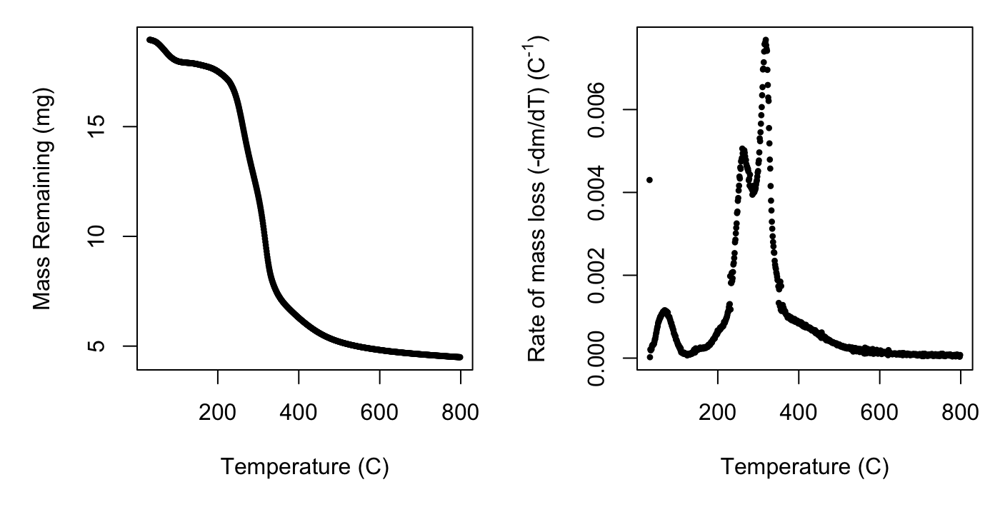
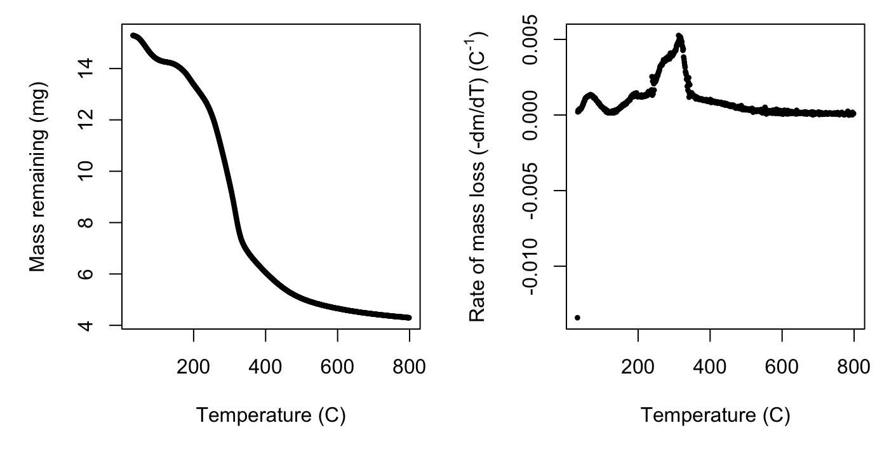
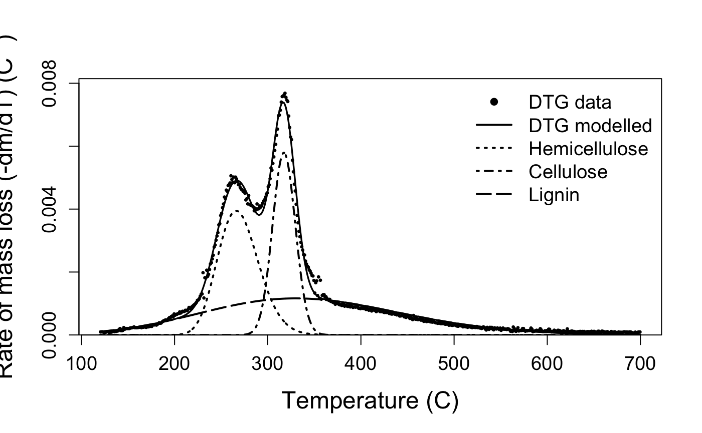
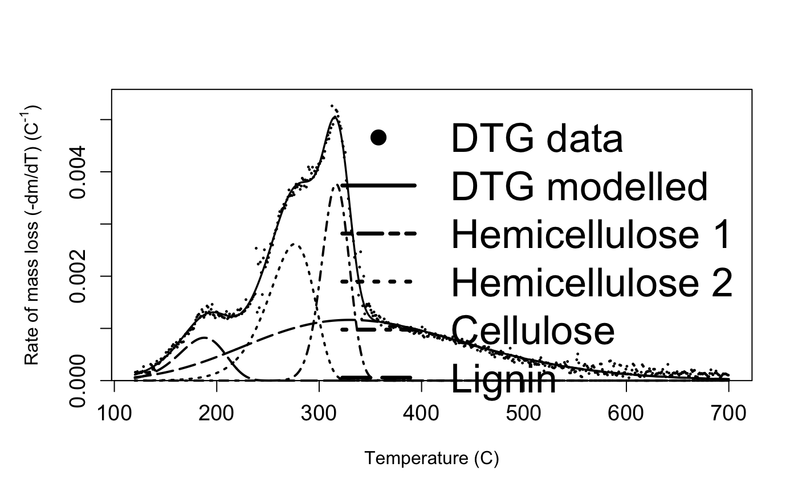

We have included two example datasets in this package, called juncus and marsilea, that we will use for this demonstration. The juncus dataset contains mass loss and temperature data derived from the theromogravimetric analysis of a sample of the freshwater reed, Juncus amabilis, and marsilea contains data for the freshwater fern, Marsilea drumondii.
The first step for you will be to load your mass loss by temperature data. This package was developed using TGA data produced by a Netzsch TGA-FTIR thermogravimetric analyser, which outputs a table with temperature and mass loss for each point of measurement. If your TGA machine outputs data in another format, you’ll need to reformat like the example below, or get in touch with us, and we’ll add new functionality.
library(mixchar)
head(juncus)## temp_C mass_loss
## 1 31.453 -0.000931
## 2 31.452 -0.001340
## 3 31.450 -0.001350
## 4 31.450 -0.001660
## 5 31.450 -0.001680
## 6 31.450 -0.001800process dataAfter we’ve loaded our data, we need to calculate the derivative of the mass loss, or in other words the rate of mass loss across temperature. This will produce the multi-peaked rate of decay curve that we will apply the mixture model to. The process function takes the derivative of our mass loss data, taking as arguments the dataset, the column names for the temperature and mass loss data, respectively, and a value for the starting mass of the sample. The function defaults to temperature data in Celsius, but you can also modify to indicate the data is provided in Kelvin, by specifying the argument temp_type = 'K'.
deriv_juncus <- process(juncus,
temp = 'temp_C',
mass = 'mass_loss',
init_mass = 18.96)
deriv_juncus## Derivative thermogravimetry data (DTG) calculated for
## 768 datapoints from 31.5 to 798.52 degrees C.deriv_marsilea <- process(marsilea,
temp = 'temp_C',
mass = 'mass_loss',
init_mass = 15.29)
deriv_marsilea## Derivative thermogravimetry data (DTG) calculated for
## 768 datapoints from 31.5 to 798.51 degrees C.At this point we can take a look at what we’ve done so far using the default plotting option for your processed data. If you plot() the output of the process function, you will get two curves: the mass of sample across time and the rate of mass loss curve. If you’re only interested in one plot, you can specify plot_type = 'mass' or plot_type = 'rate'.
The rate of mass loss curve helps us to visualise the three stages of mass loss: * Phase 1: A short period with of dehydration, up until approximately 120 \(^{\circ}\)C. * Phase 2: A wide mid-range of high mass loss, caused by devolatilisation of primary biomass carbon components, between approximately 120650 \(^{\circ}\)C. * Phase 3: A final period of little mass loss when carbonaceous material associated with the inorganic fraction decomposes, after approximately 650 \(^{\circ}\)C. In the next step we will crop the data to include only phase 2, so visualising your own data is important to check that the default temperature bounds will be suitable, in case for example the dehydration phase extends past 120 C or ends earlier. Comparing the plots for the two species we can see similarities in the shape and location of the peaks of the overall rate of mass loss curve, but also subtle differences. It is these characteristics we will tease apart using the nonlinear mixture model in the next step.
plot(deriv_juncus)
plot(deriv_marsilea)
deconvolve dataThe decovolve function takes care of modelling the rate of mass loss data with the nonlinear mixture model. To do so it first crops to the second phase, as mentioned above, to default temperature bounds of 120 C and 700 C. These can be modified with the lower_temp and upper_temp arguments. Although most biomass samples have only three main components (corresponding to hemicellulose, cellulose, and lignin), some have a second hemicellulose curve in the low temperature range. deconvolve will decide whether three or four curves are best using an internal function that determines if there is a peak below 220 C. Upon inspection of your curve you can override this by modifying the n_curves argument. The function also has built in starting values for the nonlinear optimisation. These values were tested on litter from 30 plant species, encompassing herbaceous, graminoid, as well as woody species. However, if they do not work for your sample, or would like to play with the effect of changing them, you can do so with the start_vec, lower_vec, and upper_vec arguments.
output_juncus <- deconvolve(deriv_juncus)
output_juncus## Deconvolution by 3-part Fraser-Suzuki mixture model fitted to
## 580 datapoints from 120 to 700 degrees C.output_marsilea <- deconvolve(deriv_marsilea)
output_marsilea## Deconvolution by 4-part Fraser-Suzuki mixture model fitted to
## 580 datapoints from 120 to 700 degrees C.deconvolve results in a few different outputs that you can retrieve with accessor functions.
rate_data()
process function, useful if you want to play around with other modelling approaches or plotting options:juncus_rate <- rate_data(output_juncus)
head(juncus_rate)## temp_C deriv mass_T
## 5325 120.514 9.570652e-05 17.91630
## 5384 121.501 9.885901e-05 17.91445
## 5445 122.515 1.003878e-04 17.91252
## 5505 123.514 9.133606e-05 17.91079
## 5565 124.513 6.493836e-05 17.90956
## 5625 125.509 8.578618e-05 17.90794temp_bounds()
temp_bounds(output_juncus)## [1] 120 700model_fit()
model_fit(output_juncus)## Nonlinear regression model
## model: deriv ~ fs_mixture(temp_C, height_1, skew_1, position_1, width_1, height_2, skew_2, position_2, width_2, height_3, skew_3, position_3, width_3)
## data: dataframe
## height_1 skew_1 position_1 width_1 height_2 skew_2
## 3.944e-03 1.258e-01 2.662e+02 5.106e+01 5.793e-03 1.344e-02
## position_2 width_2 height_3 skew_3 position_3 width_3
## 3.173e+02 2.866e+01 1.163e-03 1.085e-01 3.300e+02 2.500e+02
## residual sum-of-squares: 9.299e-06
##
## Number of iterations to convergence: 23
## Achieved convergence tolerance: 1.49e-08model_fit(output_marsilea)## Nonlinear regression model
## model: deriv ~ fs_mixture(temp_C, height_1, skew_1, position_1, width_1, height_2, skew_2, position_2, width_2, height_3, skew_3, position_3, width_3, height_0, skew_0, position_0, width_0)
## data: dataframe
## height_0 skew_0 position_0 width_0 height_1 skew_1
## 8.208e-04 -2.169e-01 1.879e+02 5.372e+01 2.618e-03 -3.300e-01
## position_1 width_1 height_2 skew_2 position_2 width_2
## 2.763e+02 5.240e+01 3.768e-03 -9.295e-02 3.165e+02 3.118e+01
## height_3 skew_3 position_3 width_3
## 1.163e-03 2.000e-01 3.300e+02 2.500e+02
## residual sum-of-squares: 6.385e-06
##
## Number of iterations to convergence: 25
## Achieved convergence tolerance: 1.49e-08component_weights()
component_weights(output_juncus)## HC CL LG value_type
## 1 0 0 0 2.5%
## 2 0 0 0 97.5%
## 3 0 0 0 meancomponent_weights(output_marsilea)## HC_1 HC_2 CL LG value_type
## 1 0 0 0 0 2.5%
## 2 0 0 0 0 97.5%
## 3 0 0 0 0 meanThe default plotting function for the output of the deconvolve function shows you your raw mass data, the estimated full curve from the mixture model, and also plots the individual component curves using their parameter estimates from the model.
Take a look at your plot. Do the estimates seem reasonable?
plot(output_juncus)
plot(output_marsilea)
If you want to modify the aesthetics of this plot for your own work, then you can access the parameter estimates as follows:
fit_juncus <- model_fit(output_juncus)
params <- as.data.frame(summary(fit_juncus)$coefficients[,1])and use the fs_function to plot individual component curves, and fs_mixture function to plot the overall mixture curve.